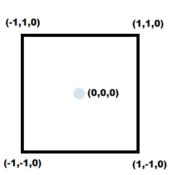
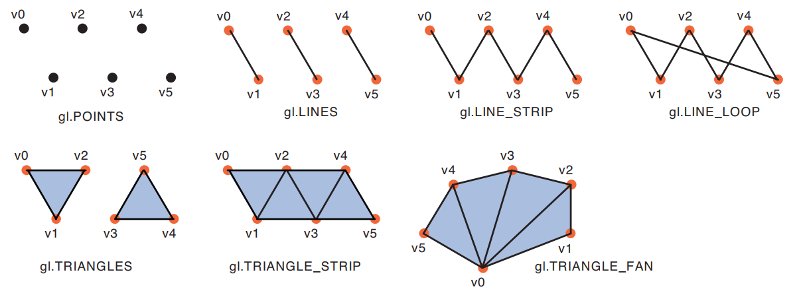
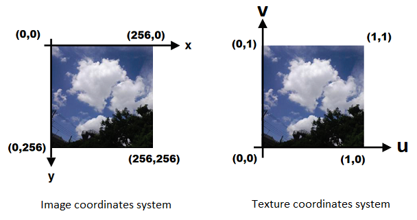
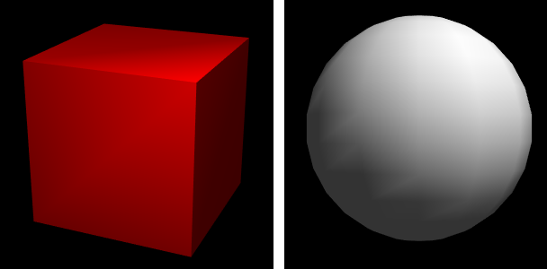

WebGL guide
october 2019 - WIP
Introduction
This page summarizes the book WebGL Programming Guide with my own tiny, simplified, editable demos.
The playground is available here and all the code is available on Github.
Helper files created while making this: webgl.js, matrix.js and shapes.js.
If you're interested in Shadertoy, WebGL raymarching and signed distance functions, check out Webgl quest and Webgl quest 2.
2D graphics
How to draw points
(from chapter 2 of the book)- A vertex is a point in 3D space (coordinates: X, Y, Z)
- A fragment is where the scene is rendered (the pixels on your screen)
- In a WebGL app, two programs (vertex shader and fragment shader) are written in HLSL language and controlled by JS to render a scene on a canvas
- The vertex shader is executed for every vertex, and sets the variable gl_Position (and gl_PointSize, if we want to draw points)
- The fragment shader is executed for every fragment, and sets the variable gl_FragColor
- The X and Y coordinates in a WebGL canvas context go from -1 to 1, whatever the size of the canvas
 - In HLSL, a float is a number written with at least one decimal (ex: 0.0, 0.1, 1.0, ...)
- A vec4 is an array of 4 floats representing either vertex coordinates (x, y, z, 1.0), a color (r, g, b, alpha), or anything you want. (vec2 and vec3 exist too)
- A mat4 is a matrix (a grid) of 4 x 4 floats. (mat2 and mat3 exist too)
Here's the simplest possible WebGL program, drawing a red point in the middle of the canvas.
The program compilation is always the same, so I've put it in a compile() function that will be used in the next chapters (see webgl.js):
// Compile a WebGL program from a vertex shader and a fragment shader
compile = (gl, vshader, fshader) => {
var vs = gl.createShader(gl.VERTEX_SHADER);
gl.shaderSource(vs, vshader);
gl.compileShader(vs);
var fs = gl.createShader(gl.FRAGMENT_SHADER);
gl.shaderSource(fs, fshader);
gl.compileShader(fs);
var program = gl.createProgram();
gl.attachShader(program, vs);
gl.attachShader(program, fs);
gl.linkProgram(program);
gl.useProgram(program);
console.log('vertex shader:', gl.getShaderInfoLog(vs) || 'OK');
console.log('fragment shader:', gl.getShaderInfoLog(fs) || 'OK');
console.log('program:', gl.getProgramInfoLog(program) || 'OK');
return program;
}
Attributes and uniforms
- Of course, WebGL is not just for drawing hardcoded points. There are many ways to send it custom values: attributes, uniforms, and buffer objects (we'll see them later)
- An attribute is a global variable passed by JS to the vertex shader. Its value can change for each vertex (ex: vertex coordinates)
- An uniform is a global variable passed by JS to all the shaders. Its value is constant for an entire draw call (ex: a color)
- For the record, some browsers (like Safari) can only draw points that are set by JS, and can't run the previous demo at all
| Qualifier | Type | GLSL | How to set its value in JS |
|---|---|---|---|
| attribute | float | attribute float f; | gl.vertexAttrib1f(gl.getAttribLocation(program, 'f'), 1.0); |
| vec4 | attribute vec4 v; | gl.vertexAttrib4f(gl.getAttribLocation(program, 'f'), 1.0, 2.0, 3.0, 4.0); // or gl.vertexAttrib4fv(gl.getAttribLocation(program, 'f'), [1.0, 2.0, 3.0, 4.0]); | |
| uniform | float | uniform float f; | gl.uniform1f(gl.getUniformLocation(program, 'f'), 1.0); |
| vec4 | uniform vec4 v; | gl.uniform4f(gl.getUniformLocation(program, 'f'), 1.0, 2.0, 3.0, 4.0); // or gl.uniform4fv(gl.getUniformLocation(program, 'f'), [1.0, 2.0, 3.0, 4.0]); | |
| mat4 | uniform mat4 m; | gl.uniformMatrix4fv( gl.getUniformLocation(program, 'm'), false, new Float32Array([...]) ); |
Here's the same demo as before, but the position, size and color of the point are now set by the JS code.
The next demo shows how to add a new point with a different color every time the canvas is clicked.
After each click, the only things to do are: reset canvas, set the attributes/uniforms, and call drawArrays.
How to draw lines and triangles
(from chapter 3 of the book)- An array buffer can be used to pass binary data from JS to the shaders (ex: a list of vertices, a list of colors, ...)
- This buffer is always read as a list of numbers, formatted as one of these types:
Name JS container WebGL type Unsigned byte Uint8Array gl.UNSIGNED_BYTE Signed short integer Int16Array gl.SHORT Unsigned short integer Uint16Array gl.UNSIGNED_SHORT Signed integer Int32Array gl.INT Unsigned integer Uint32Array gl.UNSIGNED_INT Floating point number Float32Array gl.FLOAT
- drawArrays can render points, lines and triangles in 7 different ways:

Here's the simplest way to draw a triangle. You can edit the mode on line 53 to render points or lines instead of a triangle (ex: gl.POINTS / gl.LINE_LOOP)
The "basic" array buffer setup is always the same, so I included it in webgl.js:
// Bind an array buffer to an attribute and enable it
arraybuffer = (gl, data, program, attribute, size, type) => {
gl.bindBuffer(gl.ARRAY_BUFFER, gl.createBuffer());
gl.bufferData(gl.ARRAY_BUFFER, data, gl.STATIC_DRAW);
var a = gl.getAttribLocation(program, attribute);
gl.vertexAttribPointer(a, size, type, false, 0, 0);
gl.enableVertexAttribArray(a);
}
Translate, rotate, scale
(from chapters 3 & 4 of the book)- Vertices coordinates are represented on vec4's (x, y, z, 1.0) to ease matrix-based transformations. They're called homogeneous coordinates
Transformation Transformation applied to each vertex coordinates transformation via a matrix Identity (no change) x' = x
y' = y
z' = zTranslation along X, Y and Z axis x' = x + Tx
y' = y + Ty
z' = z + TzRotation around X with an angle φ (in radians) x' = x
y' = y cos φ - z sin φ
z' = y sin φ + z cos φRotation around Y with an angle θ x' = x cos θ + z sin θ
y' = y
z' = -x sin θ + z cos θRotation around Z axis with an angle ψ x' = x cos ψ – y sin ψ
y' = x sin ψ + y cos ψ
z' = zScaling along X, Y and Z axis x' = Sx * x
y' = Sy * y
z' = Sz * z - Multiple transformations can be accumulated by multiplying their matrices
- To translate then rotate a point, multiply in this order: (〈 rotation matrix 〉 × 〈 translation matrix 〉) × 〈 original coordinates 〉
- Matrices and vectors can be multiplied together natively in GLSL. In JS, each term must be computed separately
Note: in this example, the transformation matrix (translation x rotation x scale) is computed in the fragment shader.
This is easy to code, but it's not efficient in real conditions, as the computation is performed for every fragment of the program.
In the next examples, it will be computed once (in JS) and passed to the shader.
Functions added in matrix.js:
// Create an identity mat4
identity = () => {
return new Float32Array([
1, 0, 0, 0,
0, 1, 0, 0,
0, 0, 1, 0,
0, 0, 0, 1
]);
}
// Compute the multiplication of two mat4
multMat4Mat4 = (a, b) => {
var i, e, a, b, ai0, ai1, ai2, ai3;
var c = new Float32Array(16);
for (i = 0; i < 4; i++) {
ai0 = a[i];
ai1 = a[i+4];
ai2 = a[i+8];
ai3 = a[i+12];
c[i] = ai0 * b[0] + ai1 * b[1] + ai2 * b[2] + ai3 * b[3];
c[i+4] = ai0 * b[4] + ai1 * b[5] + ai2 * b[6] + ai3 * b[7];
c[i+8] = ai0 * b[8] + ai1 * b[9] + ai2 * b[10] + ai3 * b[11];
c[i+12] = ai0 * b[12] + ai1 * b[13] + ai2 * b[14] + ai3 * b[15];
}
return c;
};
// Transform a mat4
// options: x/y/z (translate), rx/ry/rz (rotate), sx/sy/sz (scale)
transform = (mat, options) => {
var x = options.x || 0;
var y = options.y || 0;
var z = options.z || 0;
var sx = options.sx || 1;
var sy = options.sy || 1;
var sz = options.sz || 1;
var rx = options.rx;
var ry = options.ry;
var rz = options.rz;
// translate
if(x || y || z){
mat[12] += mat[0] * x + mat[4] * y + mat[8] * z;
mat[13] += mat[1] * x + mat[5] * y + mat[9] * z;
mat[14] += mat[2] * x + mat[6] * y + mat[10] * z;
mat[15] += mat[3] * x + mat[7] * y + mat[11] * z;
}
// Rotate
if(rx) mat.set(multMat4Mat4(mat, new Float32Array([1, 0, 0, 0, 0, Math.cos(rx), Math.sin(rx), 0, 0, -Math.sin(rx), Math.cos(rx), 0, 0, 0, 0, 1])));
if(ry) mat.set(multMat4Mat4(mat, new Float32Array([Math.cos(ry), 0, -Math.sin(ry), 0, 0, 1, 0, 0, Math.sin(ry), 0, Math.cos(ry), 0, 0, 0, 0, 1])));
if(rz) mat.set(multMat4Mat4(mat, new Float32Array([Math.cos(rz), Math.sin(rz), 0, 0, -Math.sin(rz), Math.cos(rz), 0, 0, 0, 0, 1, 0, 0, 0, 0, 1])));
// Scale
if(sx !== 1){
mat[0] *= sx;
mat[1] *= sx;
mat[2] *= sx;
mat[3] *= sx;
}
if(sy !== 1){
mat[4] *= sy;
mat[5] *= sy;
mat[6] *= sy;
mat[7] *= sy;
}
if(sz !== 1){
mat[8] *= sz;
mat[9] *= sz;
mat[10] *= sz;
mat[11] *= sz;
}
};
Multi-attribute buffer and varying color
(from chapter 5 of the book)- A single array buffer can hold interleaved data, for example X/Y/R/G/B values, recurring every 5 floats
- A varying is a global variable writable by the vertex shader and readable by the fragment shader
- Every fragment (pixel) inside the triangle, if it's bound to a varying color variable, will be interpolated from the color of each vertex around it
Texturing
(from chapter 5 of the book)- Fragment interpolation can be done on a set of colors, but also on a texture image (it's called sampling in this case)
- Any texture (square or rectangle) has a local coordinates system that goes from 0 to 1, and every associated vertex will have texture coordinates in this system
- An Image object can be bound to an uniform sampler2D to create a texture, which is applied to the current fragment using gl_FragColor = texture2D(sampler,coord);
- The "pixels" of the texture are called texels

Here's an example of textured quad (a square made of two triangles). Play with the numbers to change the way the vertices and texture are mapped:
Similarly, multiple textures can be used at once. For example, initialize two samplers, and multiply them in the fragment shader (DEMO)
vec4 color0 = texture2D(sampler0, v_TexCoord);
vec4 color1 = texture2D(sampler1, v_TexCoord);
gl_FragColor = color0 * color1;3D graphics
3D camera
(from chapter 7 of the book)- In WebGL (and 3D graphics in general), the "camera" is abstract: its position, angle and perspective are defined by a matrix
- On render, every vertex in the scene is multiplied by this matrix to simulate these camera properties
- First, the camera's perspective (including field of view, aspect ratio, near clip plane and far clip plane) can be set with:
- Then, the camera can be translated, rotated and scaled (zoomed) by multiplying the corresponding matrices (see "Translate, rotate, scale" above)
- A LookAt() function is often used by developers to set the camera's position, angle and target all at once. It's included in the book's file cuon-matrix.js
- I find the lookAt function too heavy though, so I only added the perspective function in matrix.js:
// Set perspective // options: fovy, aspect, near, far perspective = (mat, options) => { var fovy = options.fovy || 1.5; var aspect = options.ratio || 1; var near = options.near || 1; var far = options.far || 100; var s = Math.sin(fovy); var rd = 1 / (far - near); var ct = Math.cos(fovy) / s; mat.set([ ct / aspect, 0, 0, 0, 0, ct, 0, 0, 0, 0, -(far + near) * rd, -1, 0, 0, -2 * near * far * rd, 0 ]); }
Hello cube
(from chapter 7 of the book)- As seen before, buffer objects with the type gl.ARRAY_BUFFER can hold vertex properties (position, color)
- Though, in 3D models, vertices are often shared between multiple triangles
- Instead of repeating the same vertices many times, we can write each vertex once, and use another buffer object with the type gl.ELEMENT_ARRAY_BUFFER that makes triangles simply by using indices of the first object
- In 3D, depth-sorting must be enabled with gl.enable(gl.DEPTH_TEST); and the screen is cleaned with gl.clear(gl.COLOR_BUFFER_BIT | gl.DEPTH_BUFFER_BIT);
- Also, gl.drawArrays is replaced with gl.drawElements
Color each face of the cube
- In this case, each vertex doesn't have a single color: it has a different color depending on which face is rendered
- Thus, we need to declare the vertices of each face separately in an array buffer, then the colors of each vertex of each face in another array buffer, and finally, use an index buffer that references both vertices and colors
- The indices have small integer values, so we represent them with a Uint8Array. For more than 256 values, use Uint16Array. For more than 65536 values, use Uint32Array
I've added the cube declaration in the cube() function of shapes.js to avoid repeating it in the next demos
Lighting and shading
(from chapter 8 of the book)- First, we can make diffuse light reflexion, where the light is reflected equally in all directions when it hits a face of the cube
- To do that, we need to define a light with a color (for example, white), and a direction (for example, vec3(0.5, 3.0, 4.0))
- Each face has normal: a vec3 pointing to the outside of the cube, with a length of 1, i.e. "normalized"
- In the fragment shader, we perform a dot product between the light vector and the face normal, to determine how much the light is diffused
dot product - visualized ⚪
— Freya Holmér (@FreyaHolmer) November 30, 2019
the dot of two normalized vectors, as shown here, can say how similar they are
a • b = 1, same direction
a • b = 0, perpendicular
a • b = -1, opposite directions
you might also be able to see why it's sometimes called scalar projection~ pic.twitter.com/vg8TwNZ8qs - If the dot product is negative, we set it to "0" (there can't be a negative amount of light). This is done with max(dot(light, normal), 0.0);
- The color sent to the fragment shader is: the light's color (rgb) × the face color (rgb) × the dot product of the normal and the light, and the color's alpha is set to 1.0
- In HLSL, the composants of a vec4 can be accessed with .x/y/z/t (if it's a position) or .r/g/b/a (if it's a color). Composants can be composed too (ex: vec3 rgb = col.rgb).
With diffuse lighting alone, some faces are too dark, like the rightmost one here. To fix that, we can add an ambient light (added equally to every vertex's color):
With these two techniques, the color is computed per-face, which doesn't look super natural (each face has a flat color).
This can be improved using a point light, that has a specific position and color. The shading will vary with the distance between each point of the cube and the point light
It can be computed per-vertex, which looks better but still doesn't look perfect due to imprecise linear color interpolation (see the book's demos: cube / sphere)...

... so the best solution is to compute point light shading for every fragment of the cube (i.e. every pixel), and that's exactly what the fragment shader is here for:
You can also see a sphere shaded per-fragment in this example from the book.
Transforming the shaded cube
- So far, we've only transformed the camera matrix, to make it revolve around the cube
- Due to the lack of light or other cubes in the scene, it was equivalent to having the cube rotate on itself
- Now that we have a fixed point light in the scene, if we want to rotate, translate or scale the cube, we need to do two things:
- introduce a model matrix (the transformation matrix of the cube),
- recompute the 6 cube's normals and the lighting of every fragment when the model matrix is updated - Computing a face normal from scratch can be done using a cross-product of two face vectors respecting the right hand rule (AB × BC if the points A, B and C are arranged counterclockwise)
cross product - visualized ⚔
— Freya Holmér (@FreyaHolmer) December 6, 2019
the cross product A × B is a super useful way to take two 3D vectors, and get a third vector *perpendicular to both*, shown in blue (with its length shown in gray)! pic.twitter.com/d3NZoLEUtq - Though, it's simpler to only compute the normals once, on load, and pass them to the vertex shader, along with the vertex position and the face color
Then, when the model matrix changes, the trick is compute its inverse transpose (in JS) and pass it to the vertex shader
In the vertex shader, the original normal just needs to be multiplied by this matrix to obtain its new value: vec3 newNormal = oldNormal * inverseTranspose - Here are the functions I added in matrix.js to compute the inverse transpose:
// Get the transposed of a mat4 transpose = m => { return new Float32Array([ m[0], m[4], m[8], m[12], m[1], m[5], m[9], m[13], m[2], m[6], m[10], m[14], m[3], m[7], m[11], m[15] ]); } // Get the inverse of a mat4 // The mat4 is not modified, a new mat4 is returned inverse = m => { var inv = new Float32Array([ m[5]*m[10]*m[15] - m[5]*m[11]*m[14] - m[9]*m[6]*m[15] + m[9]*m[7]*m[14] + m[13]*m[6]*m[11] - m[13]*m[7]*m[10], -m[1]*m[10]*m[15] + m[1]*m[11]*m[14] + m[9]*m[2]*m[15] - m[9]*m[3]*m[14] - m[13]*m[2]*m[11] + m[13]*m[3]*m[10], m[1]*m[6]*m[15] - m[1]*m[7]*m[14] - m[5]*m[2]*m[15] + m[5]*m[3]*m[14] + m[13]*m[2]*m[7] - m[13]*m[3]*m[6], -m[1]*m[6]*m[11] + m[1]*m[7]*m[10] + m[5]*m[2]*m[11] - m[5]*m[3]*m[10] - m[9]*m[2]*m[7] + m[9]*m[3]*m[6], -m[4]*m[10]*m[15] + m[4]*m[11]*m[14] + m[8]*m[6]*m[15] - m[8]*m[7]*m[14] - m[12]*m[6]*m[11] + m[12]*m[7]*m[10], m[0]*m[10]*m[15] - m[0]*m[11]*m[14] - m[8]*m[2]*m[15] + m[8]*m[3]*m[14] + m[12]*m[2]*m[11] - m[12]*m[3]*m[10], -m[0]*m[6]*m[15] + m[0]*m[7]*m[14] + m[4]*m[2]*m[15] - m[4]*m[3]*m[14] - m[12]*m[2]*m[7] + m[12]*m[3]*m[6], m[0]*m[6]*m[11] - m[0]*m[7]*m[10] - m[4]*m[2]*m[11] + m[4]*m[3]*m[10] + m[8]*m[2]*m[7] - m[8]*m[3]*m[6], m[4]*m[9]*m[15] - m[4]*m[11]*m[13] - m[8]*m[5]*m[15] + m[8]*m[7]*m[13] + m[12]*m[5]*m[11] - m[12]*m[7]*m[9], -m[0]*m[9]*m[15] + m[0]*m[11]*m[13] + m[8]*m[1]*m[15] - m[8]*m[3]*m[13] - m[12]*m[1]*m[11] + m[12]*m[3]*m[9], m[0]*m[5]*m[15] - m[0]*m[7]*m[13] - m[4]*m[1]*m[15] + m[4]*m[3]*m[13] + m[12]*m[1]*m[7] - m[12]*m[3]*m[5], -m[0]*m[5]*m[11] + m[0]*m[7]*m[9] + m[4]*m[1]*m[11] - m[4]*m[3]*m[9] - m[8]*m[1]*m[7] + m[8]*m[3]*m[5], -m[4]*m[9]*m[14] + m[4]*m[10]*m[13] + m[8]*m[5]*m[14] - m[8]*m[6]*m[13] - m[12]*m[5]*m[10] + m[12]*m[6]*m[9], m[0]*m[9]*m[14] - m[0]*m[10]*m[13] - m[8]*m[1]*m[14] + m[8]*m[2]*m[13] + m[12]*m[1]*m[10] - m[12]*m[2]*m[9], -m[0]*m[5]*m[14] + m[0]*m[6]*m[13] + m[4]*m[1]*m[14] - m[4]*m[2]*m[13] - m[12]*m[1]*m[6] + m[12]*m[2]*m[5], m[0]*m[5]*m[10] - m[0]*m[6]*m[9] - m[4]*m[1]*m[10] + m[4]*m[2]*m[9] + m[8]*m[1]*m[6] - m[8]*m[2]*m[5] ]); det = m[0]*inv[0] + m[1]*inv[4] + m[2]*inv[8] + m[3]*inv[12]; if(!det) return m; det = 1 / det; for(var i = 0; i < 16; i++) { inv[i] *= det; } return inv; } - We also pass a "mvp" (model view projection) matrix to the vertex shader, which is the multiplication of the camera matrix and the model matrix
Here's a cube rotating on itself with a fixed camera and a fixed point light:
Note: if the model matrix is only a rotation or an uniform scaling, the inverse transpose matrix will be equal to the model matrix. But in any other transformation or combination of transformations, it will have a specific value that will let the shader compute the new normals with a simple multiplication (more info here)
Drawing many cubes
- Of course, it's possible to declare the vertices coordinates, colors and normals of each cube, but that would be very verbose
- Instead, we can consider the cube we already declared at the center of the scene as a model
- For each cube we want to draw, we simply need to transform this model (by setting the model matrix, mvp matrix and inverse transpose matrix) and render it
Here's a demo with 3 red cuboids (deformed cubes)
To avoid repetitions, I added a drawShape function in shapes.js:
// Draw the current shape
drawShape = (gl, program, cameraMatrix, modelMatrix) => {
var model = gl.getUniformLocation(program, 'model');
gl.uniformMatrix4fv(model, false, modelMatrix);
// Set the cube's mvp matrix (camera x model)
var mvpMatrix = multMat4Mat4(cameraMatrix, modelMatrix);
var mvp = gl.getUniformLocation(program, 'mvp');
gl.uniformMatrix4fv(mvp, false, mvpMatrix);
// Set the inverse transpose of the model matrix
var inverseTransposeMatrix = transpose(inverse(modelMatrix));
var inverseTranspose = gl.getUniformLocation(program, 'inverseTranspose');
gl.uniformMatrix4fv(inverseTranspose, false, inverseTransposeMatrix);
// Render
gl.drawElements(gl.TRIANGLES, n, gl.UNSIGNED_BYTE, 0);
}Hierarchical objects
(from chapter 9 of the book)- A hierarchical object is a model made of several basic objects (called segments), like a robotic arm made of many cuboids
- Joints represent how the segments are linked and rotate relatively to each other, like an elbow and a forearm
- These transformations are done by combining model and rotation matrices
This simple demo represents a robotic arm made of two cuboids: